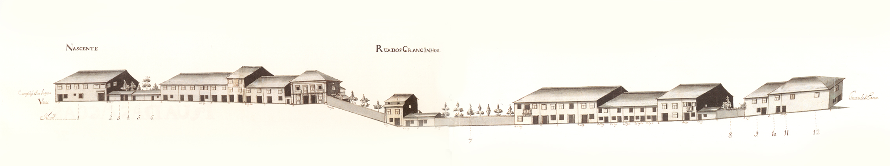

Rua de S. Marcos
Descrição: Envolvia muralha, do lado Este, e ligava o exterior da Porta do Soutoao campo dos Remédios. Aberta no tempo de D. Diogo de Sousa rapidamente se encheu de casas no alçado Nascente; o Cabido, que aqui tem aforada apenas uma casa e o convento dos Remédios, era já senhor de um prazo em 1515. O lado Poente, que encostava à muralha, não tinha nenhuma edificação em 1594, segundo o mapa de Braunio. Esta rua, onde existe o último exemplar completo de casa com gelosias, tão vulgar nas artérias principais de Braga em 1750, não está representada no Mappa porque pertencia à Câmara. E é pena porque, para além da imagem que nos transmitiria, nos poderia dar muitos elementos que agora só documentalmente poderemos obter. Uma última informação fica: no último quartel do séc. XIX agrupavam-se aqui as principais oficinas de escultores santeiros da cidade. Seria também assim no séc. XVIII? Mantém ainda hoje o mesmo nome. Mandada abrir por D. Diogo de Sousa em terreno acidentado, estabelecia uma ligação rápida entre a porta de S. João e a rua da Ponte de Guimarães. Aquele arcebispo instalou também aqui uma fonte em 1509. Aberta em plena zona rural, de certo modo nas traseiras do hospital de S. Marcos, esta artéria mostra muitas casas do tipo de porta ladeada de janela, no piso térreo. Uma única habitação aparece aqui bem cuidada, com «molduras» em pedra nas portas e janelas: todas as outras, são simples e de pedra – excepto a do prazo nº 1 - mais ou menos bem tratadas, avultando 3 com varandas. De salientar ainda que quase todas as janelas são do tipo bracarense. Tendo no Mappa apenas desenhado o seu lado Nascente, tinha então 32 casas, 9 das quais eram prazos do Cabido. A rua dos Granjinhos corresponde hoje à metade Sul das ruas de S. Lázaro e dos Granjinhos.

Rua de São Marcos - Nascente

Rua dos Granjinhos - Nascente

Imagem atual da rua: Rua de S. Marcos

Imagem atual da rua: Rua de S. Marcos
Lista de Casas:
- Casa 1: Enfiteuta - António de Araújo Ferreira, alfaiate, Foro - 70 reis
- Casa 2, 3 e 4: Enfiteuta - N/A, Foro - N/A
- Casa 1: Enfiteuta - Manuel Fernandes da Silva, mestre de pedraria, Foro - 480 reis e 4 galinhas
- Casa 2 e 3: Enfiteuta - Manuel Fernandes da Silva, mestre de pedraria, Foro - 40 reis
- Casa 4, 5 e 6: Enfiteuta - Manuel Fernandes da Silva, mestre de pedraria, Foro - 150 reis e 1 galinha
- Casa 7: Enfiteuta - Os herdeiros de João Marques, da Rua de S. Marcos, casado com Catarina de Araújo, Foro - 160 reis e 2 galinhas
- Casa 8: Enfiteuta - N/A, Foro - N/A
- Casa 9 e 10: Enfiteuta - Pedro Gomes de Basto, c.c. Maria de Magalhães, Foro - N/A
- Casa 11: Enfiteuta - Pedro Gomes de Basto, c.c. Maria de Magalhães, Foro - N/A
- Casa 12: Enfiteuta - Pedro Gomes de Basto, c.c. Maria de Magalhães, Foro - N/A